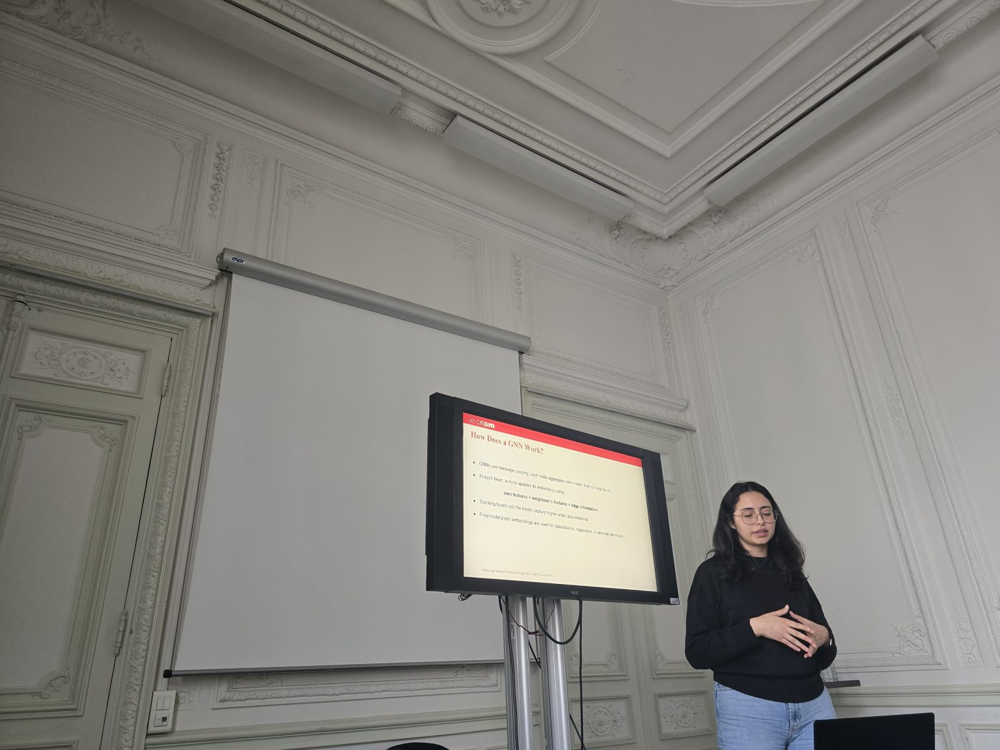

Graph ML & Anomaly Detection
Graph neural networks for intrusion detection, and multivariate time series anomaly detection combining PCA, Dynamic Time Warping and GNNs on the SWaT industrial dataset.
Graph neural networks for intrusion detection, and multivariate time series anomaly detection combining PCA, Dynamic Time Warping and GNNs on the SWaT industrial dataset.
Preprocessing pipelines for large, noisy security datasets and reproducible evaluation protocols, built during my research internship at CNAM Paris.
Medical image classification above 90% accuracy, an image classification server, and a predictive maintenance pipeline on NASA CMAPSS.
From ESP32 firmware and EMG signal processing to Arduino Wi-Fi devices: I like models that meet real sensors.

I presented my work on anomaly detection for networking datasets, using graph neural networks combined with PCA and Dynamic Time Warping.
Predictive maintenance pipeline on CMAPSS data: ingestion, preprocessing, model workflow and a remaining-useful-life prediction interface.
Image classification server with TorchVision models: upload, transformations, histograms and downloadable results.
Classifies weak, medium and strong passwords with TF-IDF features and a comparison of supervised models.
Laravel e-commerce platform for a tech shop with catalogue, cart, checkout, contact forms and an admin dashboard.
Scroll to follow the route · Sfax → Cagliari → Paris → Cagliari
M.Sc. in Computer Engineering, Artificial Intelligence & Machine Learning
Erasmus exchange semester: big data, network security, digital forensics, web security, malware analysis
Master 1 in Embedded Systems · Licence in ICT, IoT specialisation (2022)
I'm open to PhD positions and machine learning roles in France.